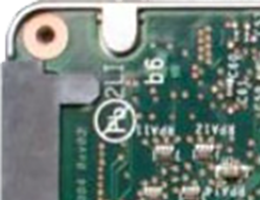
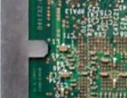
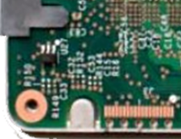
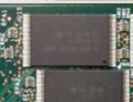
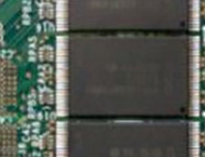
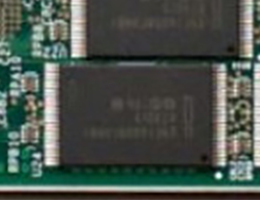
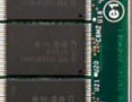

)))))))))))))))))))







hard drives
soft drives
ciphers
The wind howls so loud the Cowgirl almost doesn't hear the whirring fan as a Hard Drive approaches. "Do you want to buy these photos? Alpha Wranglers only, uncut, uncensored and unhinged!"
The Cowgirl shrugs it off, tired of the Hard Drives thrusting their digital porn in her face, even if the content objectifies data wranglers. The Hard Drive persists until it becomes fed up with the Cowgirl's resistance. "Do I have to spell it out for you? I have screenshots of the data wranglers opening the brackets on this here gate! Now allow bluetooth sharing so I can get on with my night."
The Cowgirl accepts the gift and the HD disappears into the night, this time a layer of dust spread across her shoulders and Air Max 97s.
)))))))))))))))))))